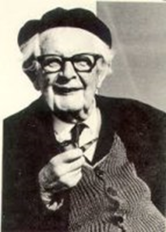
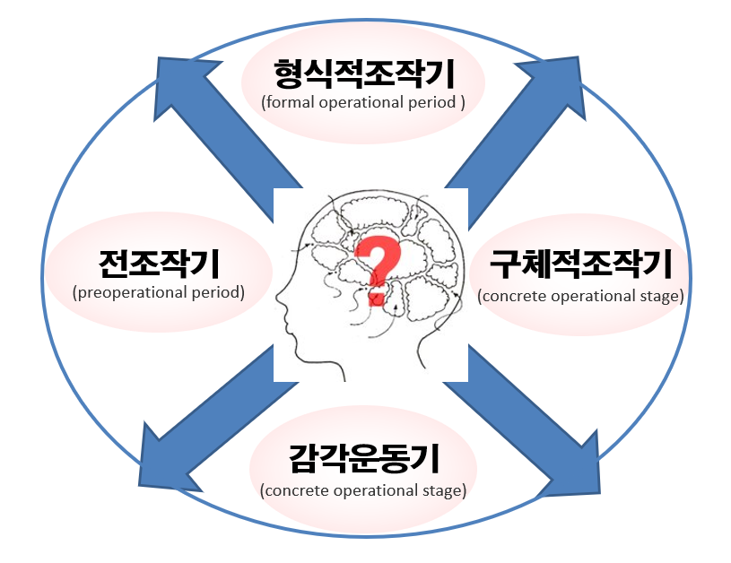

Piaget 이론의 특징
생물체는 주어진 자신의 환경에 순응하기 위하여 자신의 신체구조를 바꾸어 간다. 인간은 환경의 여러 상황을 수동적으로 받아들이고 흡수하는 것이 아니라, 능동적인 활동을 통해 자신의 인지구조를 지속적으로 재구성해 나가기 위하여 인지를 발달시킨다. Piaget(1896～1980)는 인간의 인지발달은 자신의 지적능력이 환경과 상호작용을 통하여 변화해 나가는 과정이라고 주장하였다.

인지발달은 생득적 요인의 신체적 성숙(physical maturation)과 환경적 요인으로써 물리적 경험(physical experience)과 타인과의 상호작용으로 인한 사회적 요인(social experience), 평형화(equilibration) 4가지 구성요소이다. 인간은 스스로 자신의 인지구조를 형성하고 재구성하는 개인의 내재적 능력이 인지발달의 핵심 기능이 존재한다. 인지발달은 4가지 구성요소들 간의 상호작용에 의해 발달하고 점차 변화를 추구한다.
Piaget에 의하면 평형화는 동화(assimilation)와 조절(accommodation)기능의 통합 과정이라고 하였다.
동화와 조절
1) 동화
동화는 외부현실을 자신의 도식(scheme)에 맞추어 받아들이는 과정이며 동화에 의해 지식이 확장되는 것이다. 새로운 대상이나 사물을 인지할 때 기존 인지구조에 맞추어 인식하는 것이다. 예를 들어 다리가 4개 있고, 꼬리가 있고 멍멍 소리를 내는 개, 다리가 4개 있고, 꼬리가 있고 야옹 소리를 내는 고양이 도식을 갖고 꼬리를 흔들고 멍멍 소리를 내는 삽살개를 개라고 구분하는 인지도식 과정은 동화에 속한다.
2) 조절
외부현상이 자신의 도식이나 구조에 맞지않을 때 도식이나 구조를 새로운 대상에 맞게 변화시켜 적응하는 과정이다. 즉 기존의 인지구조를 새로운 정보에 알맞게 수정하는 것을 의미한다. 예를 들면 물체가 하늘 높이 '날아가는 것은 새' 라는 인지구조를 가진 아이가 '새가 날아간다'. '비행기가 날아간다'를 구분하여 수정하는 것이다.
이 두 과정이 상보적인 과정을 이루며, 보다 새로운 상위 도식이나 구조를 가져오게 함으로써 인지발달을 이룬다. Piaget는 인지발달의 기능적인 측면뿐만 아니라 구조적인 측면을 설명하고 있다. 그는 인간이 가지고 있는 이 세상에 대한 이해의 틀을 도식(scheme) 또는 구조(structure)라고 불렀다. 도식이나 구조는 연령이 증가함에 따라 환경과의 상호작용 속에서 질적인 변화를 겪는다. 동화와 조절이 원만하게 일어나지 않으면 인지적 불평형 상태에 빠지고 다양한 경험과 상회적 상호작용을 통하여 평형화가 질적으로 나타난 상태를 인지발달이라고 한다.
인지발달 과정의 특성
Piaget는 아이의 인지구조 차이를 기준으로 인지발달 과정을 4단계로 구분하여 각 단계마다 독특한 특성을 제시하였다. 아이는 문화적 배경이나 사회․경제적 요인 등에 따라 각 단계에 도달하는 연령은 변동될 수 있으나 발달순서는 모든 아이에게 거의 동일하다.

1) 감각운동기(sensory motor period)
감각운동기는 신생아의 단순한 반사들을 나타내는 출생부터 시작해서 초기의 유아적 언어를 나타내는 상징적 사고가 시작되는 2세 경에 끝난다. Piaget는 단순한 도식들이 결합되어 새로운 도식을 형성 과정을 6개 하위단계를 제시하면서 감각과 운동 사이의 관계를 설명하였다. 이 시기의 중요한 인지발달로서 대상 영속성(object permanence) 개념은 7～8개월 경에 획득된다.
대상영속성이란 직접 보거나 만질 수 없는 경우에도 공간 내의 어딘가에 대상이 존재하고있음을 알 수 있다는 능력이다. 즉 아이는 어머니가 눈 앞에 없어도 불안해 하지 않고 자신의 주변 어딘가에 있다는 것을 알고 기다릴 수 있다. 이 시기의 감각활동과 운동이 차차 내면화되어 2세경이 되면 표상적인 사고를 할 수 있게 된다.
2) 전조작기(preoperational period)
일반적으로 2세에서 7세 경까지에 해당되는 전조작기는 인지발달과정에 뚜렷한 전환점이 된다. 이 시기의 아이는 옹알이에서 언어를 사용함으로써 외계의 현상이나 사상(event)에 대한 표상을 형성한다. 또한 표상을 구조화하여 내면의 표상구조를 행동으로 나타낼 수도 있다. 아이는 생일파티에 대해 질문을 하면, 생일케이크와 촛불, 생일축하 노래 부르기, 선물하기 등 시간적 순서에 따라 이해하고 말한다. 자신의 행동 원인과 결과를 구조화할 수 있을 정도로 스크립트(script)할 수 있다. 이와 같이 이 시기는 구체적 대상과의 직접적 접촉에 대한 것만 한정된다. 아이는 직접 지각적 경험에 관련되지 않는 사건이나 대상을 조작(operation)하는 능력이 제한되어 있어서 조작을 전환(conversion)할 수 없다. 또한 어떤 문제를 해결하고 인과관계의 중요성을 이해하는 데 어려움이 있다. 이러한 현상을 보존개념(conservation)이라고 한다. 보존개념이란 수, 양, 길이, 넓이, 부피 등이 그 형태나 모양을 바꾸어 여러 가지 다른 방법으로 제시된다고 할지라도 그 실체는 변하지 않는다는 사실에 대한 이해를 의미한다. 특히, 자기중심적(egocentric) 사고와 물활론적 사고를 지닌다.
3) 구체적 조작기(concrete operational stage)
구체적 조작기 7～11세 아이는 비논리에 근거한 사고에서 논리에 근거한 사고로의 극적 전환을 나타낸다. 이 시기는 양, 수, 길이, 무게, 부피, 넓이 등에 대한 보존개념이 과제의 형성에 따라 차례로 형성이 되며 전조작기에 할 수 없는 다양한 인지과업을 획득한다. 대상들을 여러 가지 양적 차원에 따라 순서로 나열하는 서열화(seriation) 능력과, 대상과 대상 간의 관계성을 이해하는 유목포함(class inclusion) 조작능력이 발달한다.
이 단계의 아이들은 점차 자기중심적인 사고에서 벗어나 또래와의 상호작용을 통하여 자신의 관점과 상대방의 관점에서 생기는 모순을 발견하고 다른 사람의 입장에서 이해할 수 있는 탈중심적인 사고를 한다. 그러나 아이는 과거 경험의 도움 없이는 순전히 언어적 조작을 수행할 수 없다. 아이가 새로운 인지구조를 가졌다 할지라도 추상적인 사고에는 지각의 한계를 벗어날 수 없다.
4) 형식적 조작기(formal operational period )
형식적 조작기 11~12세에 들어서면 구체적인 대상이 없어도 추상적인 상징체계에 의한 개념사고가 가능하다. 문제 해결을 위해 체계적으로 조작하거나 가설을 설정하고, 실제로 검증할 수 있으며, 조합적 사고(combinational thinking)가 가능하다. 형식적 조작기의 자기중심성의 특징은 자신의 사고와 다른 사람이 생각하는 것을 구별하지 못한다.
이 시기는 자신에게 관심과 주위를 기울이는 상상적 청중 속에 자신이 둘러싸여 있다고 믿고, 자신은 타인과 다르다는 독특한 상상을 만들기도 한다. 이러한 자기중심성은 충동적, 반항적인 무모한 비현실적인 행동의 원인이 될 수도 있다. 또한 형이상학적이고 이념적인 문제에 관심도 있으며, 성인들의 살아가는 방식에 의문을 제기하는 경향도 나타낸다.
2022.01.10 - [분류 전체보기] - 피아제의 인지발달 4단계와 감각운동기 하위 6단계
피아제의 인지발달 4단계와 감각운동기 하위 6단계
피아제 인지발달 4단계 인지발달은 순서대로 단계를 거쳐 진행되며, 점차 복잡성이 요구된다. 피아제(Piaget)의 인지발달은 다음과 같다. 1. 감각운동기 감각운동기(sensorimotor stage, 출생~2세경)는
think-sis.co.kr
2022.01.07 - [분류 전체보기] - 피아제의 인지 발달 이론 - 주변 세계를 이해하는 인지의 변화
피아제의 인지 발달 이론 - 주변 세계를 이해하는 인지의 변화
인지발달이론(cognitive development theory)은 인간이 유전적 요인에 의해 결정되는 존재가 아니라 주변환경과 문화적 자극을 능동적으로 구성할 수 있는 잠재력을 지닌 존재로 발달한다는 이론이다.
think-sis.co.kr